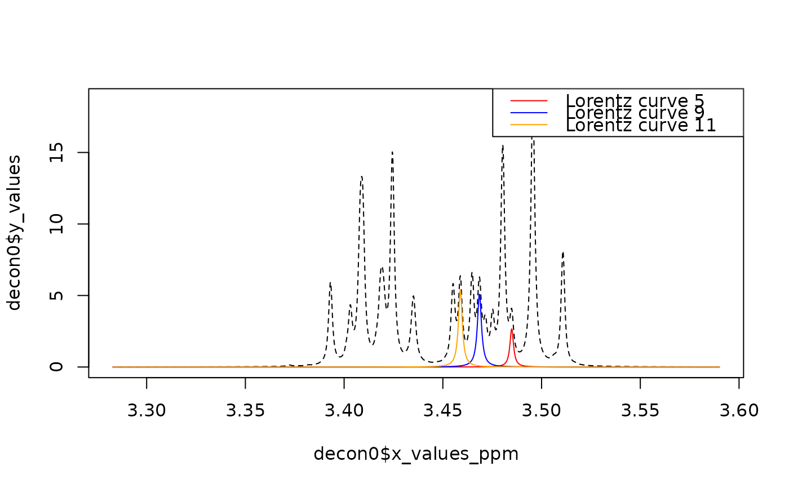

Calculates the lorentz curves of each investigated spectrum.
Martina Haeckl, 2021: Initial version. Tobias Schmidt, 2024: Minor updates to pass CRAN checks
Arguments
- deconv_result
A list as returned by
generate_lorentz_curves()or MetaboDecon1D.- number_of_files
Number of spectra to analyze
Value
If deconv_result holds the result of a single deconvolution, a matrix
containing the generated Lorentz curves is returned, where each row depicts
one Lorentz curve. If deconv_result is a list of deconvoluted spectra, a
list of such matrices is returned.
Examples
## -~-~-~-~-~-~-~-~-~-~-~-~-~-~-~-~-~-~-~-~-~-~-~-~-~-~-~-~-~-~-~-~-~-~-~-~-
## Deconvolute the spectra in folder "bruker/sim_subset" into a list of
## Lorentz Curves (specified via the parameters A, lambda and x_0).
## -~-~-~-~-~-~-~-~-~-~-~-~-~-~-~-~-~-~-~-~-~-~-~-~-~-~-~-~-~-~-~-~-~-~-~-~-
sim <- metabodecon_file("bruker/sim_subset")
decons <- generate_lorentz_curves_sim(sim)
decon0 <- decons[[1]]
## -~-~-~-~-~-~-~-~-~-~-~-~-~-~-~-~-~-~-~-~-~-~-~-~-~-~-~-~-~-~-~-~-~-~-~-~-
## Calculate the corresponding y values at each ppm value for each Lorentz
## Curve. I.e. you get a matrix of dimension n x m for each deconvolution,
## where n is the number of Lorentz Curves and m is the number of ppm values.
## -~-~-~-~-~-~-~-~-~-~-~-~-~-~-~-~-~-~-~-~-~-~-~-~-~-~-~-~-~-~-~-~-~-~-~-~-
yy <- calculate_lorentz_curves(decons)
y1 <- yy[[1]]
dim(y1)
#> [1] 27 2048
## -~-~-~-~-~-~-~-~-~-~-~-~-~-~-~-~-~-~-~-~-~-~-~-~-~-~-~-~-~-~-~-~-~-~-~-~-
## Visualize the 5th, 9th and 11th Lorentz curve.
## -~-~-~-~-~-~-~-~-~-~-~-~-~-~-~-~-~-~-~-~-~-~-~-~-~-~-~-~-~-~-~-~-~-~-~-~-
nrs <- c(5, 9, 11)
col <- c("red", "blue", "orange")
desc <- paste("Lorentz curve", nrs)
plot(decon0$x_values_ppm, decon0$y_values, type = "l", lty = 2)
for (i in 1:3) lines(decon0$x_values_ppm, y1[nrs[i], ], col = col[i])
legend("topright", legend = desc, col = col, lty = 1)
